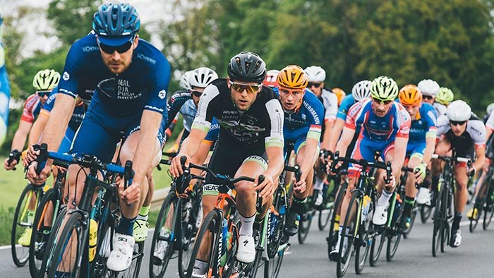

.
Welcome to the mountain spoke
At "the mointain spoke" we pride ourselves in providing personalized tours and events to help you find your next thrilling adventure. With over 30 years in the business and a knowleageable staff you will get a unique experience and a tour of a life time. Founded in 1983, Joseph S. Miller knew what the customer needed and strived to them with quality, one of a life time tours, and great service at an affordable price.
Our tours have been designed with our customers in mind. We know not everyone likes the same thing or is looking for a generic experience. We can accomodate individuals, groups, company retreats, and also provide personalized one on one tours. Our tour guides have undergone extensite training and are prepared to respond in any situtation. Our bikes are also equiped with GPS technology and our tour guides carry satellite phones at all times in case of an emergency.
the mountain spoke events and tours
.

Cancer research marathon
Afternoon stroll around NYC
❮
❯
What our customers are saying:
"Fast and friendly customer service. Visited the shop because my new bike was in need of an alignment and they were able to fix it the same day. Prices are very competitive and I even got a 10% off coupon by signing up to their newsletter. I would definitely be coming back not only for repairs but to participate in one of their summer tours."
~Karen H. from New York
"A bike tour is a must on everyone's bucket list. I have always wanted to go but was hesitant because I don't have a lot of experience but I found a beginners tour and decided to give it a try. It was an amazing experience being able to enjoy nature and at the same time fulfilling one of my dreams."
~Doug B. from Arizona
"My dear mother passed away two years ago from Cancer. Our family wanted to honor her memory so we signed up for the Cancer Research Marathon last year. It was an unforgettable experience to come together with cancer survivors and families of loved ones who passed away and contribute even a little bit towards the fight against cancer."
~Susan W. from Montana